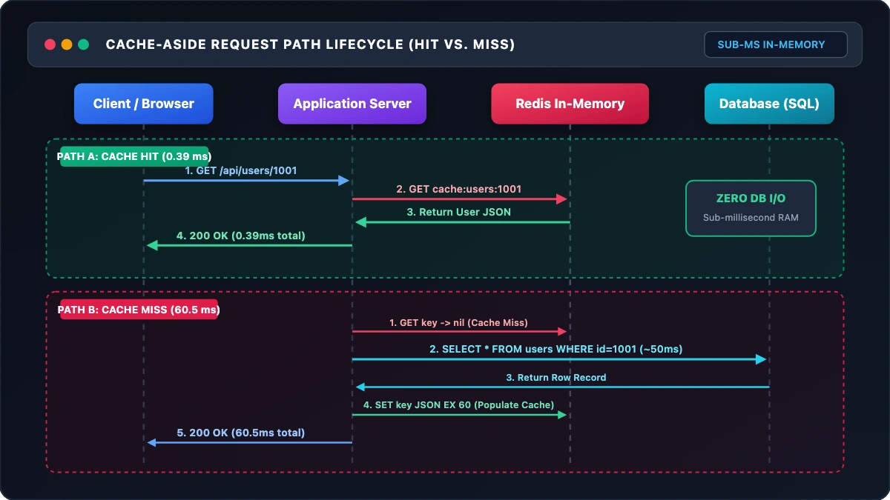
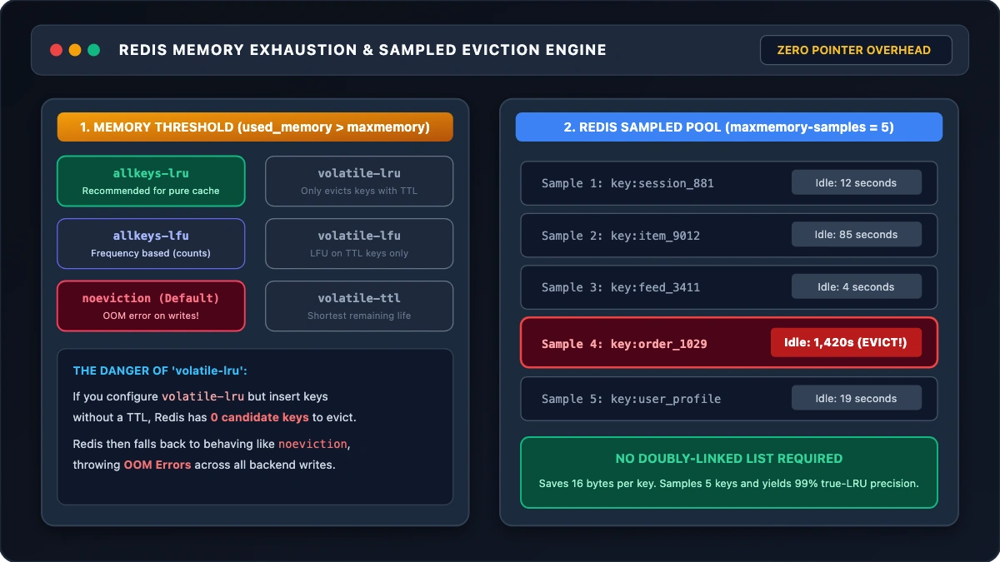
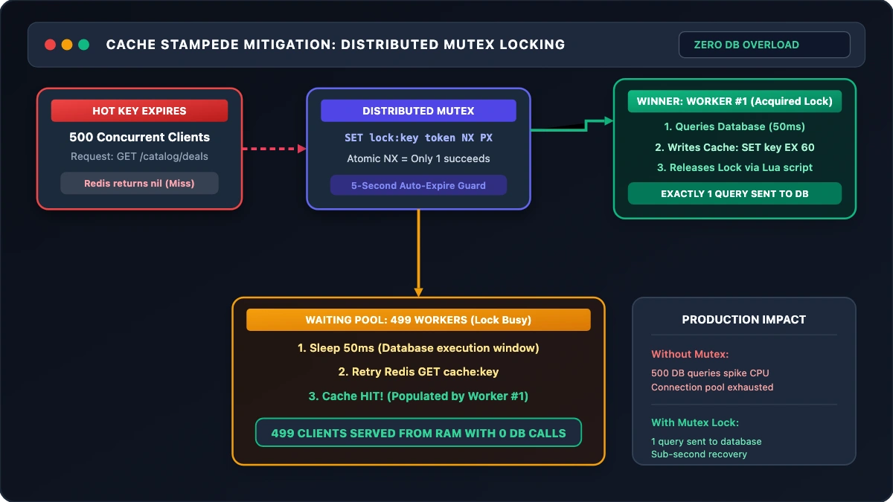
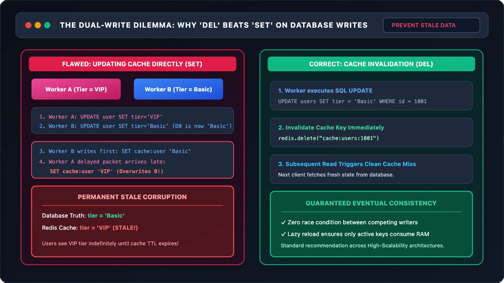

Every backend engineer eventually confronts the same wall: your relational database, once fast and responsive in development, begins to buckle under high-concurrency read traffic. Queries that took 2 milliseconds now wait behind connection pools, disk I/O spikes toward 100%, and API response times degrade.
The standard industry prescription is immediate: "Put Redis in front of it."
Yet treating Redis as an opaque black box that magically accelerates queries frequently leads to production outages. Engineers wake up at 3:00 AM to discover cache stampedes knocking over primary databases, memory leaks triggered by misconfigured eviction policies, or silent data corruption caused by race conditions during cache invalidation.
To understand why Redis transforms system throughput, we have to look at the physical memory hierarchy of modern server hardware:
| Storage Layer | Typical Access Latency | Normalized Scale (If L1 = 1s) |
|---|---|---|
| CPU L1 Cache | ~1 ns | 1 second |
| Main Memory (RAM) | ~50–100 ns | ~1.5 minutes |
| NVMe Flash SSD | ~50–150 µs | ~1.5 days |
| Relational DB (Disk + B-Tree) | ~5–50 ms | ~2 months |
In Cache-Aside, the application coordinates between Redis and the database.

Redis implements 8 eviction policies. Rather than maintaining expensive doubly-linked list pointers across millions of keys, Redis uses low-overhead random sampling.

When a hot key expires, hundreds of concurrent requests flood the database. A distributed mutex lock (SET NX PX) ensures only 1 worker queries the database while the rest wait.

Concurrently updating cache values with SET causes out-of-order writes that permanently corrupt cache data. In Cache-Aside, always DEL on write.

--- 1. Cold Start (Cache Miss) ---
Elapsed Time: 60.50 ms | DB Queries: 1
--- 2. Hot Read (Cache Hit) ---
Elapsed Time: 0.39 ms | DB Queries: 1 (155x Latency Reduction)
--- 3. Invalidation on Write ---
[INFO] Invalidated cache key: cache:users:usr_1001
Cache key exists in Redis: False
--- 4. Stampede Mutex Protection (10 Concurrent Readers) ---
10 concurrent requests triggered 1 database query (Target: 1).
All 10 workers returned valid data: True